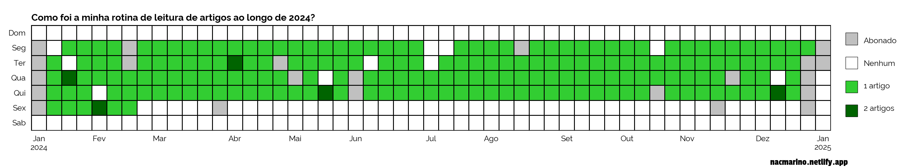

Uma das resoluções de 2024 foi voltar com o hábito de tentar ler um paper por dia (de trabalho) que mantive entre a época do doutorado ao pós-doutorado. Aqui eu busco explorar como integrar o hábito de leitura diária de artigos científicos na sua rotina, dando dicas práticas para organizar suas leituras, ajustar metas e superar desafios, tornando a leitura uma atividade enriquecedora.
# carregando o reticulate para interagir com o Pythonlibrary(reticulate)# criando um ambiente do conda para esse post, caso ele nao existaif(!condaenv_exists(envname ='blog_post_env')){# criando o ambiente do conda que sera usado nessa sessaoconda_create(envname ='blog_post_env', python_version ='3.11')# lendo os pacotes e versoes que precisam ser instaladas no ambiente a partir# do requirements.txtrequirements<-read.delim(file ='requirements.txt', header =FALSE)$V1# importando as libs para este postconda_install(envname ='blog_post_env', packages =requirements, pip =TRUE)}# apontando para o ambiente desse postuse_condaenv(condaenv ='blog_post_env')
Estudar é uma das atividades que mais gosto de fazer no meu tempo livre (quando eu tinha tempo livre), pois considero empolgante estar exposto a temas diferentes, novidades e outros pontos de vista. Acredito que isso não só amplia nosso conhecimento, mas também expande nossa visão sobre o mundo e nos ajuda a conectar pontos que talvez nunca conectássemos no dia a dia. E aqui não estou falando apenas de conhecimento técnico voltado para o trabalho, mas de assuntos gerais também, como fotografia, colecionismo, quadrinhos, áudio, perfumaria e vários outros temas que tentei aprender um pouco mais sobre este ano.
Pensando nisso, este ano resolvi resgatar um hábito que tinha durante a época do meio do doutorado até o fim do pós-doutorado: tentar ler um artigo científico por dia. Talvez a primeira impressão ao ouvir sobre essa meta seja que ela é uma tarefa impossível, uma vez que associamos trabalhos acadêmicos a leituras pesadas que podem demandar um conhecimento profundo sobre um determinado domínio. Essa é a realidade na maior parte dos casos, mas a tarefa em si não é impossível! Se você começar pelo motivo pelo qual vai ler o artigo - isto é, o que você está buscando com essa leitura - é bem provável que perceba que essa é uma meta bem razoável.
Eu tinha dois objetivos com aquele hábito na época: (1) entender de onde vinham as ideias e teorias (que circundavam a área da ecologia) e (2) me manter atualizado sobre as últimas tendências e discussões (ou seja, o que estava sendo pesquisado, quais resultados estavam sendo observados e métodos utilizados). Portanto, eu não precisava das leituras para implementar ou estruturar nada (ou seja, criar um conhecimento vertical), mas apenas expandir meu leque de conteúdo (ou seja, conhecimento horizontal). Com isso, uma simples passada pelo artigo já era suficiente para captar o que buscava, e o melhor: quanto mais eu lia, mais fácil e rápido era esse processo. Além disso, isso também me ajudou a melhorar a forma como estruturava minha linha de raciocínio para explicar algo, colaborando não só com a tarefa de ensinar um tema a outra pessoa, mas também na forma como eu escrevia um texto. Finalmente, o último benefício que tive foi começar a olhar algumas ideias por outros ângulos, enxergando maneiras de conectá-las de forma que (pareciam) não ter sido vistas antes. Como dá para ver, esse hábito pode trazer muitos benefícios para o dia a dia de quem o adota.
Apesar dos benefícios, deixei esse hábito de lado nos últimos anos para focar em outras formas de aprendizado, deixando a leitura de artigos apenas quando precisava resolver algum tipo de problema específico no trabalho. Então, por que retornar com esse hábito agora? Ter focado tanto em MOOCs nesse período me deu uma boa visão sobre o mainstream das coisas em inteligência artificial, aprendizado de máquina e alguns problemas de negócio específicos. No entanto, passei a sentir falta de entender a jornada que essas coisas tomaram até chegar onde chegaram, bem como de conseguir enxergar para onde elas iriam e voltar a conectar aqueles pontos.
Mas, e agora, como manter uma meta de leitura frequente com tantas demandas e falta de tempo?
Como fazer a leitura diária funcionar?
Ainda que esse seja um momento diferente da vida, muitas das práticas para fazer a meta de leitura diária funcionar continuam valendo. Com algumas adaptações (à falta de tempo e correria), algumas coisas que você pode implementar para fazer a coisa funcionar são:
Coloque tudo o que você quer ler em uma pasta: isso é importante para você ter um portfólio de possíveis leituras e não gastar tempo todo dia procurando o que ler;
Nomeie os arquivos pelo título dos artigos: isso fornece uma ideia rápida sobre o que se trata o artigo e/ou a sua mensagem principal. Além disso, isso ajuda a te fazer ler coisas diferentes a cada dia, uma vez que alguns títulos acabam sendo mais ou menos atrativos dependendo da nossa rotina;
Separe um tempo todo dia para ler: essa parte é a mais difícil, mas é a mais importante para que isso funcione. Minha sugestão é que você bloqueie todo dia o mesmo horário para fazer isso, e não precisa ser muito tempo…de 30 minutos a 1 hora por dia já são suficientes. Duas coisas aqui: não (se) permita interrupções nesse período (ou seja, assuma que é um compromisso, como uma reunião de trabalho que você não pode deixar de participar, por exemplo) e tenha em mente que se você não se der esse tempinho, ninguém vai te dar;
Não vai dar para ler um artigo todo dia, por mais que você se organize e tente: imprevistos acontecem (por exemplo, computador quebrou) e demandas que nos sugam surgem o tempo todo (por exemplo, uma viagem de trabalho). Portanto, se não der para ler em um dia, tudo bem, porque…
Um paper por dia, na média: tem dias que você vai acabar lendo mais de um trabalho (por exemplo, durante um voo) ou que façam sentido ter esse hábito dada a sua realidade (por exemplo, fins de semana). O hábito de leitura diária não deve ser encarado como uma corrida de 100m rasos, mas uma maratona;
Leia o que puder ler no tempo que você tem: existem artigos mais curtos e outros mais longos, alguns mais fáceis de ler, outros com mais detalhes técnicos. Também haverá dias em que seu tempo está mais limitado ou você não estará com muita cabeça. Portanto, escolha o que você vai ler de acordo com a realidade do seu dia;
Foque nas ideias do artigo, não nos detalhes e minúcias técnicas: o foco da leitura vai variar de pessoa para pessoa, mas o que eu geralmente busco é tentar entender a ideia que o artigo está tentando trazer. Isto é, meu objetivo é conseguir colocar em uma sentença (e com as minhas palavras) a mensagem principal do artigo ao terminar sua leitura e, para isso, não há necessidade de entender cada engrenagem, teste ou comparação com outros trabalhos;
Organize o que você leu de acordo com alguma lógica: existem várias formas de fazer isso, e o jeito certo é aquele que funcionar melhor para você. Por exemplo, eu mantenho um registro do que li pra evitar de ler a mesma coisa duas vezes (já usei várias ferramentas, como Excel, Notion,…) e também vou jogando o que li em outro diretório, organizando em subpastas de acordo com o tema geral (e.g., LLMs, visão computacional, redes neurais,…);
Otimize o tempo: aproveite momentos ociosos para ler, como durante deslocamentos ou aqueles momentos de espera (e.g., uma consulta médica ou algo assim).
Essas são algumas das práticas que eu adoto, muito embora imagine que hajam muitas outras que funcionam também. Portanto, te encorajo a buscar algumas outras formas que talvez façam mais sentido para você.
Mas e aí, consegui manter a meta de leitura diária?
Tendo em vista a minha realidade atual, defini que seria irreal achar que eu conseguiria ler alguma coisa fora dos dias de trabalho. Portanto, assumi que (inicialmente) teria 5 dias por semana para fazer minhas leituras. Se descontarmos os feriados, folga, férias, ausências médias e etc, isso daria cerca de 240 artigos. Além disso, tinha convicção de que imprevistos aconteceriam[^ainda mais com uma criança pequena entrando para a escola], de forma que haveriam dias que eu certamente não conseguiria ter tempo para ler. Portanto, defini como meta que eu deveria ler em pelo menos 75% dos meus dias de trabalho: isto equivale a uma meta de ler pelo menos 180 artigos ao longo do ano de 2024. Mas e aí, consegui?
Código
# carregando os pacotes que precisamos para extrair os resumosimport pandas as pdimport numpy as npimport matplotlib.pyplot as pltimport matplotlib.colors as clrsimport matplotlib.patches as patches# lendo o arquivo excel contendo a lista de coisas que li esse anoartigos = pd.read_excel(io ='data/leituras.xlsx')# parseando a coluna de conclusão para um datetimeartigos['conclusao'] = pd.to_datetime(artigos.Conclusão)# pegando só as anotacoes de artigos que li em 2024artigos = artigos.loc[(artigos.conclusao.dt.year ==2024) & (artigos.Tipo =='Artigo'), :]print(f'Quantidade de artigos lidos em 2024: {artigos.shape[0]}.')
Quantidade de artigos lidos em 2024: 196.
Consegui bater a meta com um pouquinho de folga! 😉
E como que foi a dinâmica de leitura ao longo do ano?
Código
# lista de dias que foram feriados ou que eu nao trabalhei por algum motivodias_fora = ['2024-01-01', '2024-02-12', '2024-02-13', '2024-03-29', '2024-04-23', '2024-05-01', '2024-11-15', '2024-11-20', '2024-12-24', '2024-12-25', '2024-12-31', '2024-01-02', '2024-01-03', '2024-01-04', '2024-01-05', '2024-05-29', '2024-05-30', '2024-08-12', '2024-10-17', '2024-12-26', '2024-12-27', '2024-12-30', '2024-12-31']# listando o inicio e fim do anoinicio, fim = pd.to_datetime('2024-01-01'), pd.to_datetime('2024-12-31')# contando quantos artigos eu li em cada diaartigos = artigos.conclusao.value_counts()# preenchendo com zeros os dias faltantes na serie temporalartigos = artigos.reindex(pd.date_range(inicio, fim), fill_value =0)# dias que nao entrarao para a conta pois ou foram feriados ou eu estava fora por algum# motivo e, portanto, nao trabalheiartigos[dias_fora] =-1# criando uma lista para armazenar o nome dos dias da semana e dos meses, para que eles # possam ser usados na figura que vamos criarDIAS_SEMANA = ['Dom', 'Seg', 'Ter', 'Qua', 'Qui', 'Sex', 'Sab']MESES = ['Jan', 'Fev', 'Mar', 'Abr', 'Mai', 'Jun', 'Jul', 'Ago', 'Set', 'Out', 'Nov', 'Dez']# mapeando a data do primeiro domingo antes do dia 1 de janeiro e aquele logo depois do# dia 31 de dezembro para que consigamos criar uma figura similar aquela do volume de # commits no historico do githubPRIMEIRO_DOMINGO = inicio - np.timedelta64((inicio.dayofweek +1) %7, 'D')fim += np.timedelta64(1, 'D')ULTIMO_DOMINGO = fim + np.timedelta64(7- fim.dayofweek -1, 'D')# calculando a quantidade total de semanas entre o primeiro e o ultimo domingo que vamos# utilizar e criando um numpy array vazio para podermos popula-lo com o volume de artigos# lidos em cada dia ao longo do ano; tambem vamos criar um dicionario vazio para que# possamos armazenar o texto dos tickmarks em pontos especificos da figura posteriormenteN_SEMANAS = (ULTIMO_DOMINGO - PRIMEIRO_DOMINGO).days //7heatmap = np.zeros((7, N_SEMANAS))ticks = {}# iterando entre cada uma das semanas (i.e., colunas do numpy array) para poder popular a # quantidade de artigos lidos nos dias de cada uma delasfor semana inrange(N_SEMANAS):# iterando entre cada um dos dias (i.e., linhas do numpy array) dentro de cada semana, # para poder colocar quantos artigos li em cada diafor dia inrange(7):# criando a data de referencia para ser usada dentro do loop, que eh a data do primeiro# domingo acrescida da quantidade de dias que transcorreu até a semana usada dentro do # loop, além do dia dentro da semana em que estamos percorrendo no loop referencia = PRIMEIRO_DOMINGO + np.timedelta64(7* semana + dia, 'D')# se estivermos olhando o primeiro dia do mes, entao vamos criar uma chave para a semana# no dicionario e associar o valor do mes correspondente. Isto, em essencia, mapeia cada # mês à semana do ano em que ele comecou - e esta informacao entrará como os tickmarks # no eixo xif referencia.day ==1: ticks[semana] = MESES[referencia.month -1]# se for tambem o primeiro dia do dia ano, entao criaremos chaves especiais que vao# codificar o ano de que estamos falando naquele tickmarkif referencia.dayofyear ==1: ticks[semana] =f'{MESES[referencia.month -1]}\n{referencia.year}'# se a data do loop estiver entre o primeiro domingo (inclusive) e o ultimo domingo # (exclusive), entao vamos pegar a quantidade de artigos lidos associada àquela dataif inicio <= referencia < fim: heatmap[dia, semana] = artigos.get(referencia, 0)# criando uma sequencia para marcar as posicoes dos dias da semana e dos meses do ano, # tomando o cuidado para centra-los no meio do tickmarky = np.arange(8) -0.5x = np.arange(N_SEMANAS +1) -0.5# criando uma lista de cores customizadas, para mapear os dias que nao vao entrar para a # conta (cinza), dias em que nao li artigos (branco), dias que li um artigo (verde claro)# e dias que li dois ou mais artigos (verde escuro)custom_cmap = clrs.ListedColormap(colors = ['silver', 'white', 'limegreen', 'darkgreen'])# criando a area de plotagem da figurafig, ax = plt.subplots(nrows =1, ncols =1, figsize = (16, 3))# criando a figura do heatmapmesh = ax.pcolormesh( x, y, heatmap, edgecolor ='black', linewidth =0.5, cmap = custom_cmap)# customizando o eixo x do grafico para que os nomes dos meses aparecam nas posicoes que # marcam as semanas em que eles comecaramax.set_xticks(list(ticks.keys()))ax.set_xticklabels(list(ticks.values()), fontsize =10, fontfamily ='Raleway')ax.xaxis.set_ticks_position('none') # customizando o eixo y do grafico para que a semana va de domingo para o sabado e, tambem,# para que os nomes dos dias das semana estejam centrado no meio do tickmarksax.invert_yaxis()ax.set_yticks(np.arange(7))ax.set_yticklabels(DIAS_SEMANA, fontsize =10, fontfamily ='Raleway')ax.yaxis.set_ticks_position('none') # customizando a o aspecto da figura para que os quadradinhos do heatmap tenham todos o # mesmo tamanho e plotando a imagemax.set_aspect('equal')# criando uma lista para armazenar as informacoes necessarias para criar a legendalegendas = [ ('silver', 'Abonado'), ('white', 'Nenhum'), ('limegreen', '1 artigo'), ('darkgreen', '2 artigos')]# iterando entre as informacoes da legenda para poder plotar cada uma delas iterativamentefor idx, legenda inenumerate(legendas): ax.add_patch( patches.Rectangle((53.5, 1.6* idx), 0.8, 0.8, facecolor = legenda[0], edgecolor ='black', clip_on =False, linewidth =0.5) ) ax.text(x =54.7, y =0.7+1.5* idx, s = legenda[1], fontfamily ='Raleway')# adicionando um titulo para a figuraplt.title( label ='Como foi a minha rotina de leitura de artigos ao longo de 2024?', fontdict = {'family': 'Raleway', 'size': 12, 'weight': 'bold'}, loc ='left')# adicionando marca do site na figuraax.annotate(text ='nacmarino.netlify.app', xy = (48.5, 8.8), fontsize =12, ha ='left', annotation_clip =False, family ='Passion One')# plotando a figuraplt.tight_layout()plt.show()

Alguns padrões interessantes que pude notar:
Consegui manter o hábito de leitura apenas durante os dias de semana, particularmente aqueles de trabalho;
Mantive a média de um artigo por dia, lendo um adicional quando não consegui ler nos dias anteriores (ou quando sabia que não o faria no dia seguinte);
Houveram alguns dias durante a semana que eu não li nada e, tampouco, compensei lendo artigos a mais - e tudo bem, isso acontece;
Em algum ponto no meio de fevereiro eu me toquei que meu objetivo não seria impactado se eu deixasse de ler um dia por semana. Portanto, eu decidi que não priorizaria a leitura de artigos às sextas-feiras, e focaria em outras demandas.
Que aprendizados posso compartilhar?
Uma das chaves para o sucesso de manter o hábito da leitura é conseguir dedicar o tempo para tal em sua rotina. Para mim, funcionou bem bloquear 30 minutos a 1 hora na minha agenda para ler algo; se tivesse que ir ao escritório todo dia, possivelmente leria enquanto estou me deslocando. Por outro lado, se minha meta fosse uma leitura semanal, possivelmente bloquearia um tempinho em um dia para isso (por exemplo, toda sexta-feira entre as 13 horas e as 14 horas). O importante aqui é consolidar um momento em que você terá (alguma) previsibilidade de tempo para ler;
Ajuste o que você vai ler de acordo com o tempo que você tem disponível. Eu geralmente consigo ler um artigo de até 10 páginas com coluna dupla em 1 hora (descontando as páginas de referências e apêndice), mas se o dia está apertado e não tenho esse tempo, eu possivelmente vou recorrer ao meu portfólio de leituras para buscar um artigo menor (por exemplo, se eu tiver só 15 minutos, vou tentar achar um artigo de até 5 páginas e coluna simples para ler);
Já mencionei a questão da organização anteriormente, mas volto a esse ponto pois ele é realmente importante e ajuda muito a manter o hábito no dia a dia;
Imprevistos acontecem e haverá períodos em que você não conseguirá manter a meta de leitura. No entanto, é importante lembrar que essa meta deve ser uma maratona e não uma corrida de 100 metros rasos. Portanto, você pode tentar compensar o déficit de leitura posteriormente, por exemplo, lendo uma quantidade maior de trabalhos pequenos nos próximos períodos (por exemplo, 2 trabalhos de até 5 páginas a cada dia);
A maioria esmagadora dos artigos disponíveis está escrita em inglês, e sei que isso pode ser uma barreira para muitas pessoas. Todavia, existem ferramentas hoje em dia que podem ajudar na tradução desses textos e, também, é possível ajustar a sua meta a essa realidade (isto é, assumindo que você vai levar mais tempo para ler um artigo, tornando sua meta semanal, quinzenal ou mensal). De qualquer forma, um benefício deste hábito também será que, com o tempo, seu inglês vai melhorar e você vai ler cada vez mais rápido. Portanto, não deixe que o inglês seja uma barreira para você;
Se o ritmo de leitura ou a meta não estiver sendo saudável, repense-a: o hábito não deve ser uma tortura ou uma competição, mas sim um momento prazeroso de aprendizado, de você para você.
Código
# deletando o ambiente que usei para criar especificamente esse postconda_remove(envname ='blog_post_env')
A imagem de capa desse post foi gerada no ideogram.ai através do prompt: A photo of a man sitting in a library, reading a book. The man has short, dark hair and is wearing a brown blazer and a white shirt. He is sitting in a chair near a bookshelf. The library has high ceilings and large windows on the left and right. There are multiple bookshelves filled with books, and a few chairs scattered around. The atmosphere is introspective and contemplative, yet inspiring and filled with philosophical wonder.
![]()